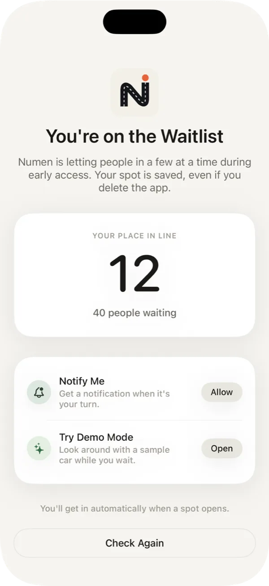
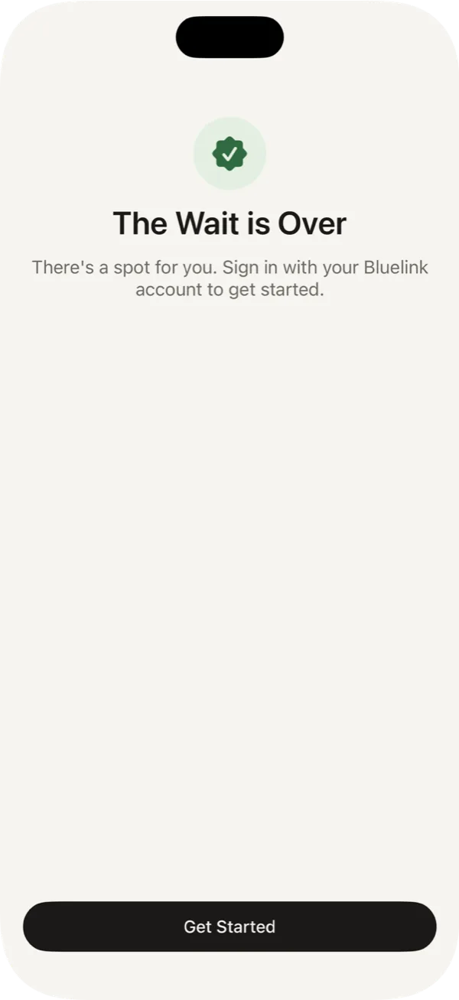
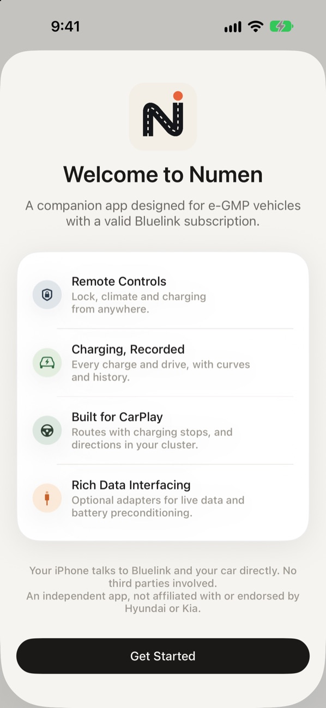

Getting Started
Requirements, joining TestFlight and setup.
Requirements
- An iPhone on iOS 27 or later.
- A Hyundai or Kia e-GMP EV (IONIQ 5, IONIQ 6, EV6 and their siblings) with an active Bluelink subscription.
- The TestFlight app from the App Store.
- Optional: a Bluetooth LE OBD-II adapter for CarPlay and live charging, and the harness adapter for preconditioning and cluster directions.
Joining TestFlight
Anyone can download Numen from TestFlight. During early access, spots in the app open a few at a time, so when you first open it you may join a waitlist.
- Install TestFlight from the App Store.
- On your iPhone, tap Download on TestFlight above, then Accept and Install.
- Open Numen. If a spot is open, setup starts right away. If not, you'll see your place in line.
The Waitlist
While you wait, Numen shows your place in line. Tap Allow to get a notification when a spot opens, or Try Demo Mode to look around with a sample car. There's no need to keep checking: Numen checks in the background and lets you in on its own.


Setup
A short onboarding flow walks you through each piece. Anything you skip waits for you in Settings, which is the gear at the top of the Service tab.


- Bluelink. Sign in with your Bluelink email, password and PIN. They're stored in your iPhone's Keychain and only ever sent to Bluelink.
- Vehicle Colour. Pick your paint so the car on the home screen matches yours.
- OBD-II Adapter. Pair it now if it's plugged in and the car is on, or later from Settings › OBD Adapter.
- Preconditioning Adapter. Pair the harness adapter, and choose whether to precondition automatically on DC-fast routes and show directions in the cluster.
- Home & Work. Used for commute times, charging plans and CarPlay suggestions.
- CarPlay. Turn on Favourite Routes, destination suggestions and trip recording.
Commands
Lock, unlock, climate, charging, horn and lights go through Bluelink and ask for Face ID first, falling back to your passcode. Bluelink delivers commands to the car over its cellular connection, so they can take anywhere from a few seconds to a minute.
If Bluelink reports the car is busy, or your phone is offline, the command is queued and sent again automatically once it can get through.
Demo Mode
Demo Mode loads a sample car so you can look around without an account. Open it from the waitlist with Try Demo Mode, or on the Bluelink sign-in screen by tapping the line "Your credentials are stored in your iPhone's Keychain and never shared" ten times. Commands in Demo Mode don't reach a real car.
From the waitlist, Demo Mode is a preview only. Signing in to Bluelink, the adapters and CarPlay open once you have a spot. Tap Leave at the top of the screen to go back to the waitlist.